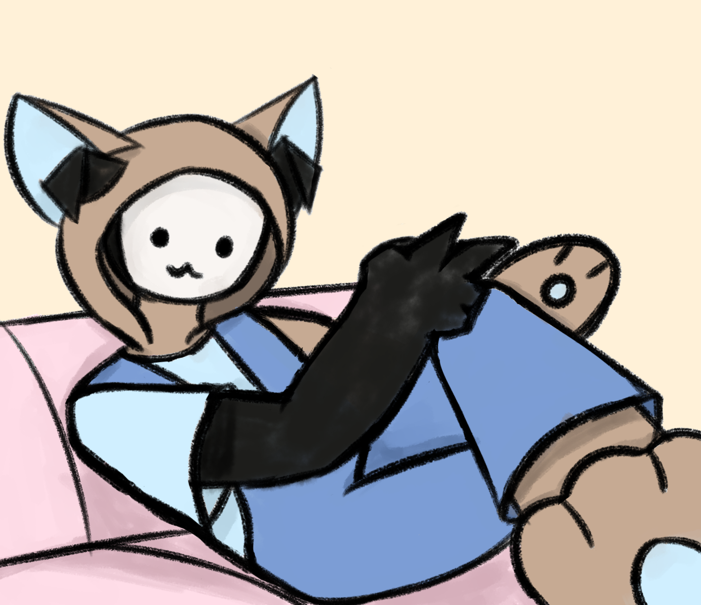
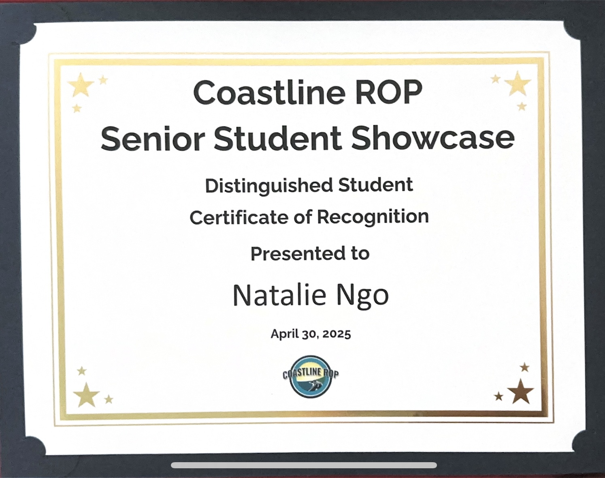
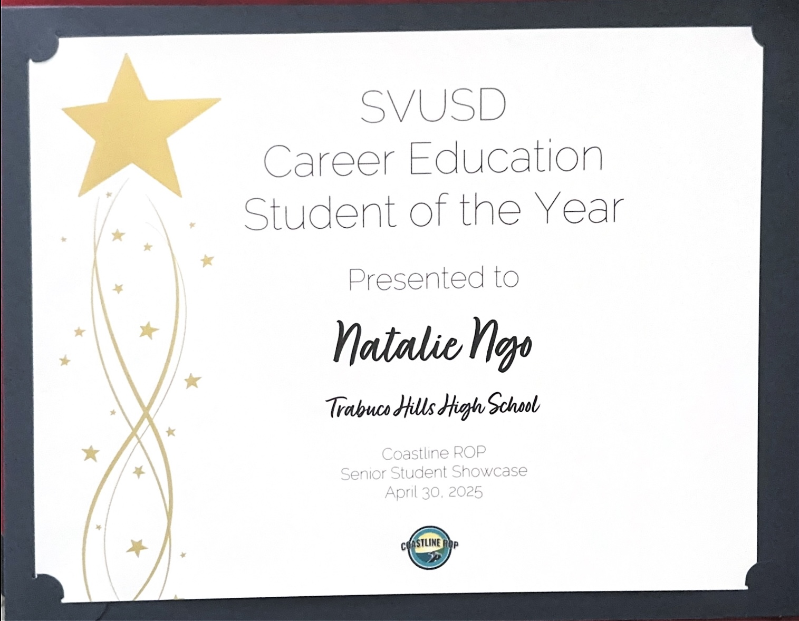
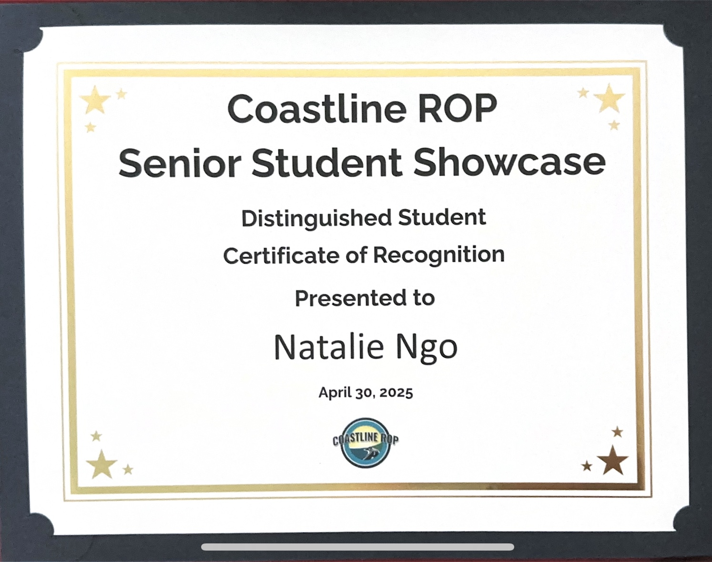
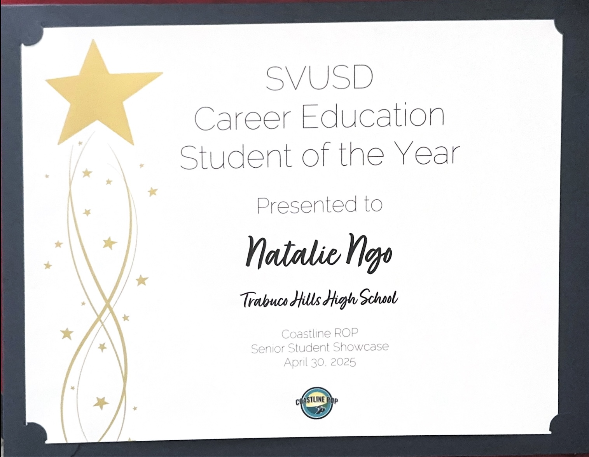

Nat Ngo
Hello, my name is Nat Ngo. I’m a first year English major studying at the University of California, Riverside. My objective towards work is to build up my experience and knowledge in order to grow as a person. These experiences will also contribute to my growth as a worker that will have the skills to effectively contribute to the workforce upon graduation.
I’m currently lacking any kind of work experience, but I do have a decent amount of experience for volunteering. I’ve previously volunteered at the Rancho Santa Margarita Library, a public library located in the city of its namesake, during the summer of 2023. I was tasked with shelving children's books, assembling simple arts & craft kits, and aided in running the booth for the library's summer reading table. In fall of that same year, I also volunteered at a food pantry associated with RSM Cares, an organization based in Rancho Santa Margarita that specializes in community services. This food pantry is held every first and third Wednesday of each month at the Shepherd of the Hills Methodist Church. I was mainly tasked with rolling boxes of food to the people passing through the pantry and lifting those boxes into their cars. Other tasks I’ve done are packing up leftover items into storage, organizing said items in storage, and cutting up cardboard boxes for recycling.
Aside from volunteer work, there have been some academic related stuff I’ve been involved in as well. I briefly served as a homework tutor back in 2021 for the duration of my 2nd and 3rd trimesters as an 8th grade student. In my final year in high school, I was awarded as my district’s student of the year by Coastline ROP, an academic program that provides specialized classes to prepare students for careers. I only took one class that was a part of the Coastline ROP program in my senior year, but I ended up getting nominated by my teacher and passing the interview phases. Interestly enough, that class was a course on film and television that I had always wanted to take since freshman year but couldn’t because I was studying virtually from freshman to junior year.
My interests tend to be varied and sporadic, but there are some subjects that I’ve constantly been invested in. Despite it not being my undergraduate major, I’ve had an interest in sociology ever since I was a teenager. This stemmed from observing people on social media and how they reacted to certain situations, which made me wonder about the rationale behind their actions. When picking an elective for my first trimester as a freshman, I was introduced to the field of sociology and it spiraled from there. Another main interest of mine are videos. I spend a lot of my free time watching a variety of videos on YouTube as well as watching television series. Because of my interest in watching videos and taking that film class from Coastline ROP, I am decently skilled at video editing on various video editing softwares like Adobe Premiere Pro, iMovie, and CapCut (PC version).
Experience
Volunteer
• Executed manual labor such as: pushing carts, lifting boxes of food into cars, and cutting up unused cardboard boxes for recycling.
• Assisted in packing up leftover items and equipment, at the end of the pantry event, and transferred them over to storage.
Teen Volunteer
• Efficiently shelved books in the children section and assembled together simple art & crafts kits.
• Assisted in running the booth for the library's summer reading table.
Student Tutor
• Asisted peers in their school work and other related issues.
Education
University of California Riverside
Portfolio





 